<center>
<table width="640" border="1" bgcolor="white">

<tr bgcolor="red">
<td align="center">
<font color="white" size="6">
<b>TIMESPÉDIA</b>
</font>
</td>
</tr>

<tr>
<td align="center">

</td>
</tr>

<tr bgcolor="green">
<td align="center">
<font color="white">
<marquee>
O maior arquivo de escudos, times e campeonatos fictícios do Brasil!
</marquee>
</font>
</td>
</tr>

<tr>
<td align="center">
<a href="index.html">Início</a> |
<a href="escudos.html">Escudos</a> |
<a href="times.html">Times</a> |
<a href="camp.html">Campeonatos</a>
</td>
</tr>

<tr>
<td align="center">
 Selecione um dos estados a seguir e comece a procurar escudos! 
<br><br>
<a href="http://timespedia.okzk.com/ac.html"></a>
<a href="http://timespedia.okzk.com/al.html"></a>
<a href="http://timespedia.okzk.com/am.html"></a>
<a href="http://timespedia.okzk.com/ap.html">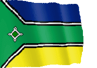</a>
<a href="http://timespedia.okzk.com/ba.html">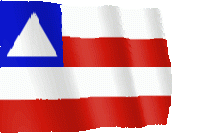</a>
<a href="http://timespedia.okzk.com/ce.html">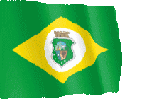</a>
<a href="http://timespedia.okzk.com/df.html">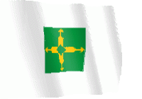</a>
<a href="http://timespedia.okzk.com/es.html">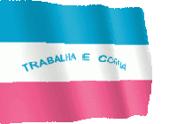</a>
<a href="http://timespedia.okzk.com/go.html">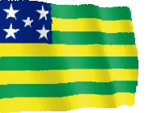</a>
<a href="http://timespedia.okzk.com/ma.html">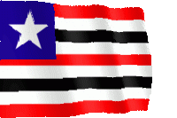</a>
<a href="http://timespedia.okzk.com/mg.html">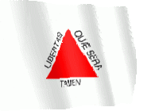</a>
<a href="http://timespedia.okzk.com/ms.html"></a>
<a href="http://timespedia.okzk.com/mt.html"></a>
<a href="http://timespedia.okzk.com/pa.html"></a>
<a href="http://timespedia.okzk.com/pb.html"></a>
<a href="http://timespedia.okzk.com/pe.html"></a>
<a href="http://timespedia.okzk.com/pi.html">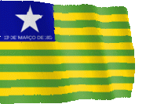</a>
<a href="http://timespedia.okzk.com/pr.html"></a>
<a href="http://timespedia.okzk.com/rj.html"></a>
<a href="http://timespedia.okzk.com/rn.html">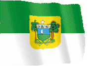</a>
<a href="http://timespedia.okzk.com/ro.html"></a>
<a href="http://timespedia.okzk.com/rr.html"></a>
<a href="http://timespedia.okzk.com/rs.html"></a>
<a href="http://timespedia.okzk.com/sc.html"></a>
<a href="http://timespedia.okzk.com/se.html">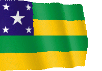</a>
<a href="http://timespedia.okzk.com/sp.html">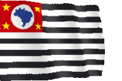</a>
<a href="http://timespedia.okzk.com/to.html"></a>
</td>
</tr>

<tr>
<td align="center">
<small>© 1996 Timespédia</small>
</td>
</tr>

</table>
</center>
